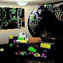
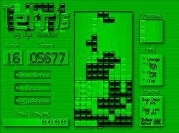
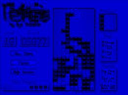
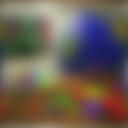
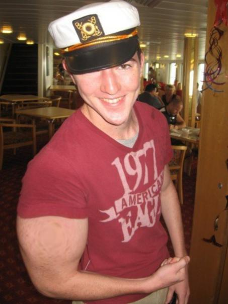

Image Processing
- Per-pixel Operations
- Linear Filtering Operations
- Nonlinear Filtering Operations
- Resampling Operations
- Dithering Operations
- Miscellaneous Operations
- Art Contest Submissions
Per-pixel Operations
Random Noise
void R2Image::AddNoise(double factor);Adds noise to an image. The amount of noise is given by the factor in the range [0.0..1.0]. 0.0 adds no noise. 1.0 adds a lot of noise. In the implementation, I chose to create an image that was all noise, and to linearly interpolate between that image and the original image based on the parameter.
 |
||||
| 0.0 | 0.1 | 0.3 | 0.5 | 1.0 |
Saturation
void R2Image::ChangeSaturation(double factor);Based on the factor, I did a pixel-by-pixel linear interpolation between the pixel itself and a pixel with each channel equal to the average luminance of that pixel. That is, higher factors lead to a higher "saturation," or weight of the color components.
 |
 |
|||
| -5.0 | 0 | 0.5 | 1 | 5.0 |
Contrast
void R2Image::ChangeContrast(double factor);I did a linear interpolation between the original image and an image of pixels with channels all equal to the average luminance over the original image. NewImage = (1 - factor)*greyImage + factor*originalImage
 |
||||
| -5.0 | 0 | 0.5 | 1 | 5.0 |
Threshold
void R2Image::Threshold(double value);Set all of the pixels with a luminance below value, [0.0, 1.0], to zero.
 |
 |
 | ||
| 0 | 0.2 | 0.4 | 0.6 | 0.8 |
Black & White
void R2Image::BlackAndWhite(void)Convert the image to a grayscale image by replacing the RGB channels with the average luminance value, pixel by pixel.
 | |
 |
Extract Channel
void R2Image::ExtractChannel(int channel)Set all of the channels not equal to channel to zero. (0=RED, 1=BLUE, 2=GREEN).
|  |  |
Linear Filtering Operations
NOTE: For all of my linear filtering operations, I used a helper function called void Convolve(R2Image* image, double filter[], int w, int h, double factor), which convolves image with filter, which is a 1D representation of a 2D kernel (parsed based on a given width, w, and a given height, h). Each entry in the kernel is multiplied by factor, which is used to prevent the image from brightening or darkening overall when the filter is applied. For instance, for a filter consisting of 9 1s, factor would be 1.0/9.0.
Gaussian Blur
void R2Image::Blur(double sigma)Convolve the image with a Gaussian kernel of width and height ceil(3*sigma) + 1. This guarantees that the kernel is of odd dimensions (required since the center of the kernel is supposed to line up with the current pixel based on the way I have the convolution set up), and it also goes out to around 3 sigma, which is more than enough to encompass the Gaussian before it converges to zero.
Use the equation G(x,y,sigma) = 2 ^ (-(x^2 + y^2) / sigma^2), where x and y are the displacements from the current pixel
NOTE: Actually, in practice, instead of creating a 2D Gaussian kernel as described above, I created a 1D Gaussian and applied it first in the horizontal direction, then in the vertical direction. I could do this because the Gaussian as written above is linearly separable; that is, G(x,y,sigma) = 2^(-(x^2 + y^2) / sigma^2) = 2^(-x^2 / sigma^2) * 2^(-y^2 / sigma^2). So x and y are independent and can be applied separately to yield the same result. This speeds up computation significantly, from (w*h*l^2) to (2*w*h*l); where w=width of image, h=height of image, l=width of filter
 |
 | |||
| sigma = 0.125 | sigma = 0.5 | sigma = 1 | sigma = 2 | sigma = 8 |
Sharpen
void R2Image::Sharpen()Apply the following kernel to every image:
| -1 | -1 | -1 |
| -1 | 9 | -1 |
| -1 | -1 | -1 |
| |
Edge Detect
void R2Image::EdgeDetect()Apply the following kernel to every image:
| -1 | -1 | -1 |
| -1 | 8 | -1 |
| -1 | -1 | -1 |
| |
Motion Blur
void R2Image::MotionBlur(R2Vector& movement, int sampling_method)Try to blur the image such that it looks like the camera just translated along the vector movement. My current implementation doesn't work perfectly, but it's close. It works well for exactly horizontal and exactly vertical. For directions that are somewhere in between, it allocates a kernel with width 3 along the smaller dimension, and height proportional to that based on the ratio between the components. It then puts a 1 at the center and at two of the corners. So for instance, for the direction 1 3, the kernel would look like:
| 0 | 0 | 1 |
| 0 | 0 | 0 |
| 0 | 0 | 0 |
| 0 | 0 | 0 |
| 0 | 1 | 0 |
| 0 | 0 | 0 |
| 0 | 0 | 0 |
| 0 | 0 | 0 |
| 1 | 0 | 0 |
|
 |
 |
|
| Original | Move along vector (0,1) | Move along vector (1,0) | Move along vector (1,3) |
Emboss
void R2Image::Emboss()Use the following linear kernel:
| -1 | -1 | 0 |
| -1 | 0 | 1 |
| 0 | 1 | 1 |

Nonlinear Filtering Operations
Median Filtering
void R2Image::MedianFilter(double sigma)For each pixel and for each pixel's channel (R,G,B), take the median value of all of the channel values around it as specified by sigma. That is, if sigma is 3, put a 3x3 window (9 pixels total) around every pixel and take the median for every channel. I used C/C++'s built in qsort to help me find the median
 |
 |
|
| Original | Sigma = 3 | Sigma = 5 |
Resampling Operations
For the resampling operations, I made 3 functions: PointResample(u, v, w, h), BilinearResample(u, v, w, h), and GaussianResample(u, v, w, h). I then used function pointers to access these. (u,v) is the coordinate describing the nearest point in the source image, and w and h describe the width and the height of the resampler (relevant only for the Gaussian resampling).
0 = POINT RESAMPLING, 1 = BILINEAR RESAMPLING, 2 = GAUSSIAN RESAMPLING
Scale
void R2Image::Scale(double sx, double sy, int sampling_method)Make the new image with the width = originalwidth*sx and height = originalheight*sy. For Gaussian resampling, make the width of the filter inversely proportional to sx and sy; that is, if sx is small (< 1), make the Gaussian filter wider to prevent aliasing.
| Original | |
| Scaled by 0.50 0.25 using Gaussian | |
| Scaled by 2 3 using Point Sampling | |
| Scaled by 2 3 using Bilinear Sampling | |
| Scaled by 2 3 using Gaussian Sampling |
Rotate
void R2Image::Rotate(double angle, int sampling_method)Rotate counterclockwise by angle in radians, using sampling_method as the resampling method (point, bilinear, or Gaussian). The image needs to be resized to the rotate form. I used the following math to help determine the new image size (and to do the mapping):
Here are some samples, all of which use Gaussian resampling with a radius of 3:
Rotated by 1 radian | |
Rotated by 6 radians |
Fun!! (the magnifying glass)
void R2Image::Fun(int sampling_method, double a, double b, double r)I distorted the image space using the following inverse mapping from (ix,iy) coordinates in the new image to (u,v) coordinates in the original image:
double dx = ix - a;
double dy = iy - bprime;
double factor = sqrt((dx*dx + dy*dy) / (r + dx*dx + dy*dy));
double u = a + factor * dx;
double v = bprime + factor * dy;
The effect is basically a magnification of the image around the focal point (a, b), with r more or less specifying the magnification rate (a bigger r leads qualitatively to bigger magnification).
NOTE: By default in imgpro, (0,0) is the point in the lower left of the image. But to be consitent with paint, I actually made (0,0) the upper left of the image when specifying the focal point (a,b). Here are some examples (all of which use Gaussian resampling):
| After More Fun!! | ||
imgpro carlton.jpg carlton1.jpg -sampling 2 118 296 10000 |
imgpro carlton.jpg carlton2.jpg -sampling 2 118 296 100000 |
|
|  imgpro will.jpg will1.jpg -sampling 2 100 470 10000 |
imgpro will.jpg will2.jpg -sampling 2 100 470 100000 |
Dithering Operations
I did exactly what was shown in the examples section, so I just copied the descriptions from there for each operation:
Quantization
void R2Image::Quantize (int nbits)Converts an image to nbits bits per channel using uniform quantization.
The number of levels per channel is L = 2nbits. The size of each input interval is a = 256 / L. The size of each output output interval is b = 255.0 / (L - 1). Each component c is mapped to floor(c / a) * b.
| 1 | 2 | 3 | 4 | 5 |
Random Dither
void R2Image::RandomDither (int nbits)Converts an image to nbits bits per channel using random dithering. It is similar to uniform quantization, but random noise is added to each component during quantization. Using a and b as defined for quantization, each component c is mapped to floor(c / a + noise()) * b. The function noise() returns a random floating point number in the interval [-0.5,0.5].
 |
||||
| 1 | 2 | 3 | 4 | 5 |
Ordered Dither
void R2Image::OrderedDither (int nbits)Converts an image to nbits bits per channel using ordered dithering. It is similar to uniform quantization, but pseudo-random noise is added to each component before quantization. The amount of noise added is determined by a Bayer's pattern matrix. The following examples used the matrix
Bayer4 =
15 7 13 5
3 11 1 9
12 4 14 6
0 8 2 10
For each pixel at (x,y), we compute i = x % 4, j = y % 4. Then, using a and b as defined for quantization, a component c is mapped to floor(c / a - 0.5 + Bayer4[i][j] / 15.0) * b.
| 1 | 2 | 3 | 4 | 5 |
Floyd-Steinberg Dither
void R2Image::FloydSteinbergDither (int nbits)Converts an image to nbits per channel using Floyd-Steinberg dither with error diffusion. Each pixel (x,y) is quantized, and the quantization error is computed. Then the error is diffused to the neighboring pixels (x + 1, y), (x - 1, y + 1), (x, y + 1), and (x + 1, y + 1) , with weights 7/16, 3/16, 5/16, and 1/16, respectively.
 |
||||
| 1 | 2 | 3 | 4 | 5 |
Miscellaneous Operations
Crop
void R2Image::Crop(int x, int y, int w, int h)
NOTE: Just as with my fun operation, I assume that (x=0, y=0) is the upper left of the image instead of the lower left, which means that I have to change the y coordinate to height - y.
imgpro chris2.jpg crop.jpg -crop 84 98 70 50 |
Anything Else: DCT / IDCT
void R2Image::DCT()
void R2Image::IDCT()
Take the forward and inverse Discrete Cosine Transforms of images (shows basically how they work). This is important, because this is the transform coding scheme that's used in JPEG.
NOTE: This is very slow, because I didn't do any optimizations; I simply left it as an n^4 algorithm. The fast DCT would have reduced it to something like n^2ln(n)^2.
| =====> | <
=====> |
Note the clustering of the low frequency components in the DCT. Also, the inverse DCT seems to be a little messed up, I think it has something to do with scaling the frequency coefficients improperly or screwing some of them up when the DCT image is converted to JPG. But a lot of the basic structure was still retained.
Art Contest Submissions

==> 
The median filter gives rise to strange, cartoon-ish noise
imgpro thinker.jpg thinkerart.jpg -median 11
==>
This is a blooper that I got when I was trying come up with a fun filter.
imgpro chris2.jpg emboss.jpg -emboss- Movie (260kB)
I used the following perl script to generate the images, and then I used a free trial version of "Blaze Media pro" to stich them together:
$base = 100;
for($i = 0; $i < 100; $i++) {
$base += 300;
`./imgpro carlton.jpg carlton$i.jpg -sampling 2 -fun 194 224 $base`
}
blog comments powered by Disqus